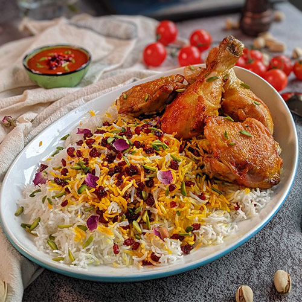

Zereshk-Polo ba Morg

Description
Zereshk Polo ba Morgh is a Persian classic made with Zereshk (barberries),
Morgh (chicken), and Polo, which is the steamed and fluffy Persian rice.
This is one of the mixed rice dishes that you will find at small casual get
togethers, as well as larger Persian dinner parties, weddings and most festive
celebrations and holidays. Sometimes this dish is served side by side with a
type of soup, usually Soup é Morgh é Zaferani, or Soup é Jo and a simple salad.
Ingredients
For the chicken:
- 8 skinless chicken thighs, or drumsticks (about 3 pounds)
- 1 tsp turmeric
- 1 tsp salt
- 3/4 tsp black pepper
- 1 large onion cut in half
- 3 cups water
- 1/8 tsp ground saffron powder (optional)
- 1 medium yellow onion, sliced thin and fried to golden brown in 2 tbsp
vegetable oil (or 3 ounces fried onions)
- 2 tbsp tomato paste
- 2 tbsp fresh squeezed lemon juice
- 1 tbsp zereshk (pick through, wash and rinse)
For the Zereshk Polo:
- 2 1/2 cups uncooked basmati rice
- 1 1/2 tsp rice spice, divided
- 1 large onion diced medium and fried to golden brown in 3 tbsp ghee, or butter
- 1/3 cup zereshk, (pick through, wash and rinse)
- pinch of ground saffron powder (optional)
- Sliced almonds and/or pistachios (optional garnish)
Steps
- In a large 12-inch skillet (with a lid) add the chicken thighs
(bone side down), turmeric, salt, pepper, onion halves and 3 cups
of cold water. Without covering the skillet, bring it to a boil
over medium high so all the foam from cooking the raw chicken rises
to the top. Use a slotted spoon to skim off the foam. Reduce the heat
to medium low, cover the skillet and cook for 30 minutes, then turn
the chicken pieces and cook for another 30 minutes on medium low.
- Thirty minutes into cooking the chicken, start making the rice
according to the instructions for Aromatic rice.
- In a medium skillet fry the sliced medium onion in 2 tablespoons
vegetable oil until golden brown. Add the tomato paste and sauté
until aromatic. Set aside.
- When the chicken is fork tender, discard the onion halves. Turn the
chicken pieces one more time (now the meaty part of the chicken will
be up) and sprinkle the optional ground saffron powder on the pieces.
Use the back of a spoon to rub the saffron on the surface of each
piece. This simple added step adds a very rich color to the chicken
pieces.
- Make the tomato sauce in the same skillet by mixing in the prepared
fried onion and tomato paste with the broth. Add 2 tablespoons fresh
squeezed lemon juice and 1 tablespoon zereshk to the sauce. Bring it
to a boil over medium heat and then reduce the heat to medium low,
cover the skillet and cook for 15-20 minutes, then turn the chicken
pieces and cook for another 15-20 minutes.
- At the end of this cooking time the chicken should easily come apart
with a fork. The sauce will be reduced and a glistening oil will
rise to the top, or as we say in Farsi, “ja biofteh” which roughly
means “to settle.” If there is too much sauce left in the skillet,
remove the lid and cook for a few more minutes until it is reduced.
- To make the zereshk/fried onion mix: In the same
skillet that you've fried the diced onion, add ⅓ cup barberries
and a pinch of optional saffron and saute over low for couple of
minutes until the zereshk plumps up. Zereshk burns very quickly so
keep the temperature very low.
- For the layered presentation of Zereshk Polo:
Use a large spatula to transfer ⅓ of the steamed Aromatic rice
to the serving platter, top with ⅓ of the barberry/fried onion
mixture and continue layering and finish the top with the remaining
zereshk/fried onion. Garnish with sliced almonds and/or pistachios.
- Serve the chicken on a separate platter.